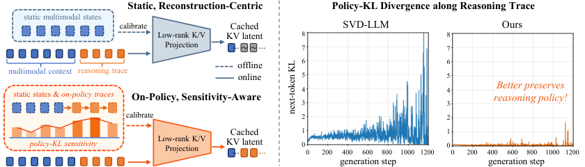

Imagine shrinking a student's notebook by studying only the printed exam questions. It works until the student starts writing long solutions, which the shrinker never saw. TraceKV studies the student's own scratch work, and keeps detail where a smudge would change the next line.
학생의 공책을 줄이는데 인쇄된 시험 문제만 보고 방법을 정했다고 해 보자. 학생이 긴 풀이를 쓰기 시작하면 문제가 생긴다. 줄이는 쪽이 풀이를 본 적이 없기 때문이다. TraceKV는 학생의 실제 풀이 노트를 보고, 얼룩 하나가 다음 줄을 바꿀 만한 곳에 디테일을 남긴다.
The problem: drift that grows with every step문제는 단계마다 커지는 드리프트
A standard compressor keeps the next-token distribution close at first, then lets it wander more and more as the chain of thought grows.
일반적인 압축기는 처음에는 다음 토큰 분포를 잘 유지하지만, 사고 사슬이 길어질수록 점점 더 크게 벗어나게 둔다.

- Calibrate on-policy.자기 궤적으로 보정.The dense model writes its own reasoning for 256 ScienceQA items. Error on reasoning states falls from 10.27 to 8.88, while ground-truth solutions only reach 9.67.원래 모델이 ScienceQA 256문항에 대해 직접 추론을 쓴다. 추론 상태의 오차가 10.27에서 8.88로 내려가고, 정답 풀이로 보정하면 9.67에 그친다.
- Weight by sensitivity.민감도로 가중.Sampled score gradients give each KV state a Fisher sensitivity. A weighted SVD then spends rank where errors would move the policy.샘플링한 점수 기울기로 KV 상태마다 Fisher 민감도를 구한다. 가중 SVD가 오류가 정책을 흔들 곳에 랭크를 쓴다.
- Allocate globally.전역 배분.Every singular component across layers competes for one rank budget by its estimated KL cost. A Hadamard rotation then makes latents easy to quantize.모든 층의 특이 성분이 추정 KL 비용으로 하나의 랭크 예산을 두고 경쟁한다. 이어서 Hadamard 회전으로 잠재 벡터를 양자화하기 쉽게 만든다.
Key point: the gap opens under pressure핵심은 압박이 클수록 벌어지는 격차
At half the rank, reconstruction-based methods lose about 10 to 20 points of reasoning accuracy. TraceKV loses about 3.
랭크를 절반으로 줄이면 복원 기반 방법은 추론 정확도를 10–20점 잃는다. TraceKV는 약 3점만 잃는다.
Results: stacking with quantization결과는 양자화와 함께 쓰기
The low-rank latents take 4-bit quantization almost for free, so the two savings multiply.
저랭크 잠재 벡터는 4비트 양자화를 거의 손실 없이 받아들여서, 두 절감 효과가 곱해진다.
| Method | Compression | Avg. acc. |
|---|---|---|
| Dense BF16 | 1.00× | 73.58 |
| RTN KV4 | 3.20× | 57.79 |
| KIVI-2 | 5.33× | 72.18 |
| Palu 70% + KV4 | 5.64× | 70.59 |
| TraceKV 70% + KV4 | 5.64× | 73.41 |
| Palu 50% + KV4 | 7.76× | 63.00 |
| TraceKV 50% + KV4 | 7.76× | 69.93 |
If you compress a reasoning model, calibrate on what it generates, not only on what it reads. Long chains of thought are where the cache spends most of its life, and where drift compounds.추론 모델을 압축한다면 모델이 읽는 것만이 아니라 모델이 생성하는 것으로 보정하자. 긴 사고 사슬은 캐시가 대부분의 시간을 보내는 곳이고, 드리프트가 쌓이는 곳이다.
Tests cover three short visual reasoning benchmarks, not long agent tasks, and calibration uses ScienceQA training data, one of the three. Only K and V projections are compressed, and the 32K speedups are extrapolated because the dense model ran out of memory.시험은 짧은 시각 추론 벤치마크 세 개뿐이고 긴 에이전트 과제는 없다. 보정 데이터는 그중 하나인 ScienceQA의 학습 분할이다. K와 V 사영만 압축했고, 32K 가속은 원래 모델이 메모리 부족으로 돌지 않아 외삽한 값이다.